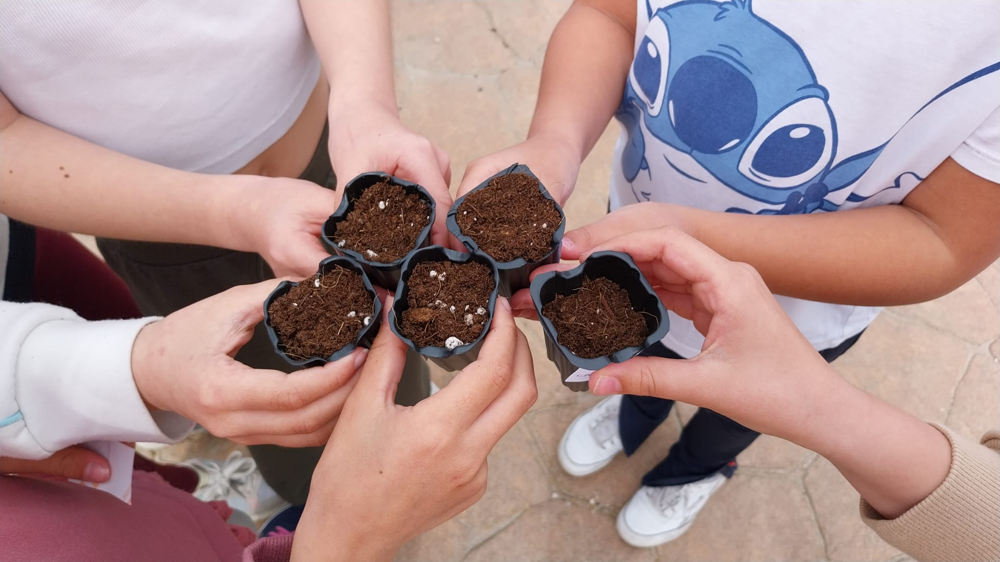
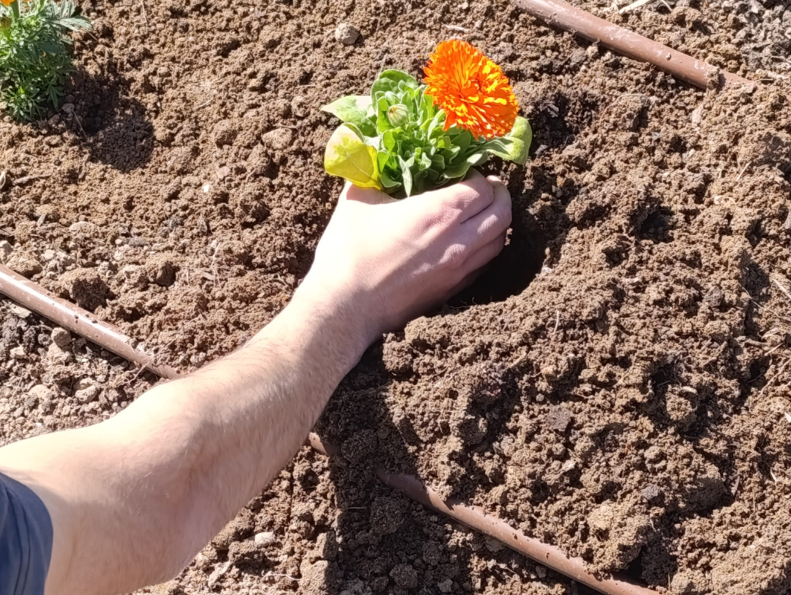
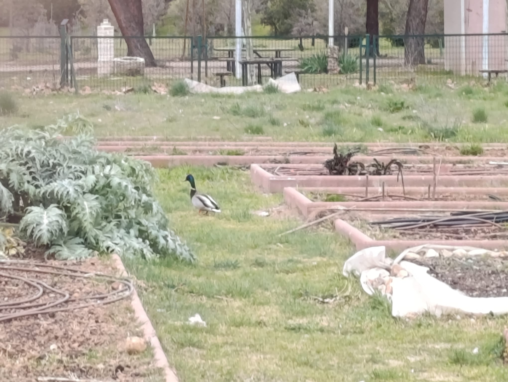
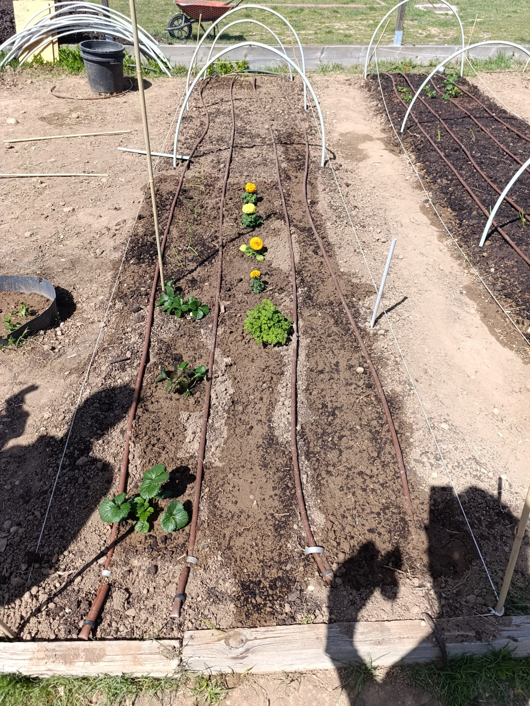

Nota: Esta entrada del diario ha sido redactada originalmente por mi compañero de bancal, Juan Carlos.
Tras las lluvias de la semana pasada, retomamos el control del bancal en las sesiones 7, 8 y 9. Esta vez toca hablar de educación ambiental con chavales, de lidiar con las ausencias en el equipo y de las crudas realidades de la supervivencia en el huerto (donde los compañeros te pueden dejar sin lechugas en un abrir y cerrar de ojos).
Día 7: Ausencias y semillas rebeldes
Después de haber colocado el riego en los días anteriores, el bancal ya estaba listo para plantar algunas cosas que habíamos comprado. Como yo no fui ese día, me fié de que mi equipo pudiera hacer algo por su propia cuenta. Lo que hicieron fue relativamente fácil: poner el mantillo y plantar algunas cosas, entre ellas una mata de fresas, semillas de capuchina y semillas de albahaca.
Esta última (la albahaca) no iba a germinar según nos dijo Adrián porque seguía haciendo mucho frío por las noches, por lo que tuvimos que comprar posteriormente dos plantas ya crecidas. Fue un día bastante aburrido y con pocas fotos ya que yo no pude estar para liderarlos.
- Reflexión: La tierra estaba muy seca y dura. Hay que poner más mantillo, no hacer caso a ciertos consejos cuestionables y, definitivamente, no puedo dejar solos a mis compañeros.
Día 8: El taller escolar y la traición de la lechuga
El octavo día se nos hizo muy largo, no solo por la sesión de agroecología, sino porque también teníamos APS (Aprendizaje y Servicio). Tuvimos que madrugar bastante para estar en el colegio Hemingway a las 8:40. Entramos a 5 clases distintas (de segundo y tercero de primaria) para dar una presentación sobre alimentación sostenible, un Kahoot y un mini-taller donde los chavales se preparaban un semillero para llevarse a casa.

Imagen 1: Semilleros resultantes del mini-taller de huerto con los chavales.
Lo pasamos muy bien. Los chavales estaban muy colaborativos, sobre todo en el taller. Mientras yo les explicaba lo que había que hacer, Noel e Iván preparaban los semilleros (por alguna razón los chavales llamaban a Noel "payico"). La experiencia estuvo muy bien y, además, nos dieron de almorzar, cosa que el muerto de hambre de Noel aprovechó para zamparse todo lo que había.
Lo que sí dejaron fueron 2 plantas de fresas (las más cuajadas que quedaban), perejil y brotes de cebollas. Eso fue lo que plantamos ese día, además de semillas de zanahorias y espinacas (estas últimas elegidas porque tampoco nos dejaron semillas de rabanitos, que era nuestra idea original). Al salir eran más de las 15:00, así que Adrián nos llevó a la salida en su buggy, lo cual fue la leche.
- Reflexiones del día: ¿Para qué tener enemigos si tengo a mis compañeros del bancal? Tenemos menta en el extremo del bancal (será usada para mojitos). Es importante regar el tallo y no las hojas. Y, por supuesto, no se pudo seguir el diseño del bancal a rajatabla.
Día 9: Un pato, caléndulas y colonización
En el noveno día fuimos a regar el huerto y a plantar algunas cosas que habíamos comprado, entre ellas una caléndula. Además, nos encontramos con que Adolfo había comprado tagetes, así que plantamos dos. Aprovechamos también para regar los semilleros de las lechugas y las acelgas.

Imagen 2: Yo plantando la caléndula en nuestro bancal.
Ese día decidimos expandirnos y colonizamos el macetero de al lado de nuestro bancal para poner la menta. Fue un día rápido y el encuentro más interesante fue con un pato salvaje que paseaba por allí. Para variar, Noel no vino e Iván tampoco (se quedó en casa jugando a la play).

Imagen 3: Nuevo compañero del bancal patrullando la zona.

Imagen 4: El huerto resultante tras la jornada de plantación y riego.
Lo que me llevo a mis cristales: Estos días me han enseñado lo rápido que se seca la tierra cuando suben las temperaturas y lo crucial que es poner mantillo para retener la humedad. En mis terrarios cerrados, la condensación hace este trabajo por mí, pero observar cómo el mantillo protege el suelo en el exterior me ha dado ideas para usar más hojarasca y musgo esfagno en mis próximos diseños de interior para estabilizar la humedad en los tarros más grandes.